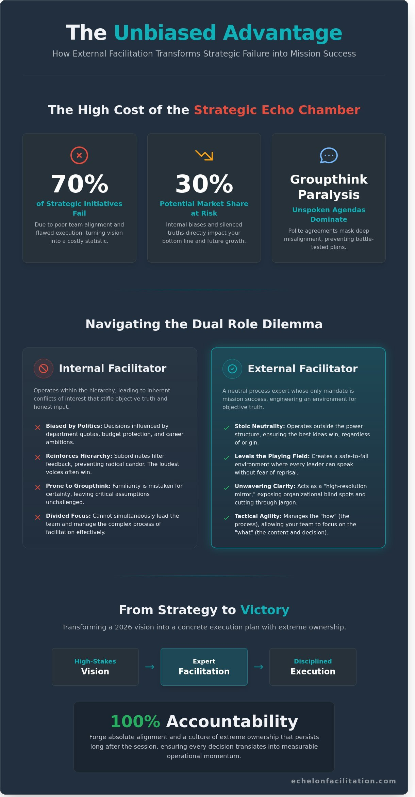

Your leadership team is likely operating within a strategic echo chamber that will cost you 30% of your potential market share by 2026. Internal hierarchies and unspoken agendas often silence the objective truth required for mission success, contributing to the 70% of strategic initiatives that fail due to poor alignment. You understand that when the stakes are this high, bringing in an external facilitator is the only way to eliminate the echo chamber effect. You’ve seen how easily a boardroom can descend into a series of polite agreements that mask deep-seated misalignment. Without a neutral force to challenge assumptions, your strategy remains a list of hopeful wishes rather than a battle-tested plan.
You’ll discover how to strip away the fluff of corporate jargon to reveal the core mission and ensure absolute alignment. This article provides the blueprint for establishing tactical clarity in high-pressure environments. We’ll examine the specific framework for decentralised ownership and the exact steps needed to transform your 2026 vision into a concrete execution plan with 100% accountability. It’s time to stop managing by consensus and start leading with precision.
Key Takeaways
- Expose the internal biases that compromise innovation by using a neutral mirror to reveal critical organisational blind spots.
- Secure the focus of your most valuable leaders by deploying an external facilitator to manage complex process dynamics.
- Recognise the specific high-stakes trigger points where external intervention is non-negotiable for securing mission success.
- Transform facilitation into a tactical lever for organisational victory through the principles of extreme ownership and clarity.
- Master the mechanics of strategic alignment to ensure every decision translates into disciplined execution and absolute victory.

Defining the External Facilitator: A Catalyst for Organisational Victory
An external facilitator is a neutral process expert deployed to guide leadership teams through high-stakes decision-making. Unlike internal executives who carry the weight of department quotas or historical office politics, this asset operates outside the hierarchy. An external facilitator serves as a strategic lever for objective truth in the boardroom. They don’t have a promotion to chase or a budget to protect. Their only mandate is the success of the mission. When the stakes are measured in millions of dollars of market share, the cost of internal bias is too high to ignore.
Success in 2026 requires more than a consensus. A 2017 study published in the Harvard Business Review found that 67% of well-formulated strategies fail because of poor execution and a lack of organisational alignment. The primary objective of an external facilitator isn’t to reach a comfortable agreement. It’s to forge alignment and clarity. This process relies on the principles of organisational facilitation to ensure every leader is locked into the same objective. This creates a foundation where decentralised command can actually function.
The Distinction Between Facilitation and Consulting
Consultants typically provide the “what” by delivering pre-packaged answers. Facilitators manage the “how” by engineering the process. The best strategic outcomes occur when the team owns the solution rather than inheriting a consultant’s report. Echelon bridges this gap by focusing on expert process management. We don’t hand you a slide deck and leave. We build the environment where your team discovers the truth. This creates a culture of extreme ownership that persists long after the session ends.
The Core Attributes of an Elite External Asset
Elite facilitators maintain a specific set of disciplines to ensure mission success:
- Stoic neutrality: They remain composed during high-pressure executive conflict, ensuring the mission stays on track.
- Tactical agility: This allows them to adjust the session rhythm based on real-time group dynamics. If a breakthrough occurs, they accelerate.
- Unwavering clarity: They cut through corporate jargon to find the objective mission.
This discipline transforms a standard meeting into a decisive strategic operation. It ensures that every minute spent in the boardroom translates into measurable operational momentum.
The Mechanics of Objectivity: Why External Eyes See Internal Blind Spots
Internal bias acts as a silent killer within corporate strategy. Teams often mistake familiarity for certainty, which prevents honest assessment. An external facilitator functions as a high-resolution mirror. They reflect team dynamics without the baggage of internal politics or the fear of reprisal. This detachment allows them to break the cycle of groupthink that often paralyses executive suites. When a CEO’s assumptions go unchallenged, the mission risks failure. Outsiders provide the necessary friction to test those assumptions safely.
High-stakes environments require formal structure to succeed. We build a safe-to-fail environment where radical candour isn’t just encouraged; it’s required. This isn’t about comfort. It’s about radical ownership. Every participant must feel they can speak the truth without risking their career trajectory.
Neutralising Power Dynamics and Hierarchy
Managers face what we call the Dual Role Dilemma. You can’t lead the team and facilitate the process simultaneously. It’s a conflict of interest that stifles honest input. Subordinates naturally filter their thoughts based on what they think the boss wants to hear. We level the playing field so the best ideas win, not just the loudest voices. External authority enables decentralised command within the workshop. It allows leaders to step back and observe the execution of ideas rather than micromanaging the conversation.
Fresh Perspectives and the “Stupid Question” Advantage
Not knowing your business is a strategic advantage for an external facilitator. It allows us to challenge foundational myths that internal teams treat as sacred. These are the “we’ve always done it this way” excuses that drain resources and kill agility. We ask the obvious questions internal teams avoid because of social friction.
- Identify 14% or more in redundant operational processes.
- Expose silos that prevent cross-departmental execution.
- Force clarity on mission-critical objectives that have become blurred.
In 2024, one such perspective shift helped a logistics firm identify a massive overlap in redundant software subscriptions. This simple inquiry, born from an outsider’s curiosity, unlocked £2.1 million in operational efficiency within six months. Fresh eyes see the waste that insiders call standard procedure. Achieving this level of clarity requires a commitment to unbiased strategic alignment.
Internal vs. External Facilitation: Navigating the Dual Role Dilemma
Internal facilitators offer cost-efficiency for routine status updates or department-level tactical syncs. However, deploying internal staff for a high-stakes 2026 strategy session is a calculated risk that rarely yields a positive return. The hidden cost of internal facilitation is the immediate loss of your most expensive talent. When a £250,000-a-year executive manages a flipchart and monitors the clock, they’re not contributing to the mission. This creates a 100% loss in their strategic output for the duration of the event. Even the most objective internal leader carries the weight of past decisions and organisational hierarchy. This “perceived bias” stifles honest feedback from subordinates who may fear professional repercussions for challenging the facilitator’s perspective. Investing £15,000 in an external facilitator delivers a 10x return compared to the £150,000 minimum cost of a failed offsite characterised by stalled momentum and executive misalignment.
The Participation Paradox
Leadership requires full immersion. You cannot facilitate and participate simultaneously. If your COO is focused on timekeeping, they aren’t focused on the market. Echelon Facilitation ensures 100% executive engagement by removing the burden of process management. Research into effective facilitator strategies indicates that neutral guidance is the primary catalyst for team cohesion and objective decision-making. Outsourcing the process allows your team to stay “in the work” rather than managing the room. It ensures every voice is heard without the facilitator’s own rank skewing the data.
Conflict Resolution and Emotional Distance
Internal staff often ignore the “elephants in the room” to protect their long-term working relationships. An external facilitator maintains the emotional distance required to confront hard truths without damaging team culture. We pause, pivot, or confront friction points with disciplined authority. This professional distance ensures the atmosphere remains focused on the mission, even when tensions rise. We don’t have a history with your team, which means we don’t have a stake in office politics. Accountability replaces avoidance. Results replace excuses. This disciplined approach maintains a professional atmosphere that prevents sessions from devolving into unproductive venting or circular arguments.
Strategic Deployment: When an External Asset is Non-Negotiable
Efficiency dictates that internal teams handle routine tactical updates. You don’t need outside intervention for standard operations. However, specific high-stakes trigger points make an external facilitator a non-negotiable asset for mission success. These moments represent the threshold where internal bias risks catastrophic failure. Objective leadership becomes the primary requirement for victory when the following scenarios arise:
- Annual strategy offsites: These sessions dictate the operational tempo for the next 365 days.
- Post-merger integration: Aligning two distinct cultures requires an objective arbiter to prevent leadership friction.
- Crisis management: Rapid pivot scenarios demand clarity when internal pressure is at its peak.
The Strategy Offsite: Your Most Critical Mission
A poorly facilitated offsite wastes more than just time; it drains executive morale and creates a vacuum of leadership. When 67% of strategic initiatives fail due to poor alignment, the cost of a “do-it-yourself” approach is too high. We build results-driven agendas that move beyond vague goals. Every session must result in actionable ownership and clear decentralised command. A strategy that stays in a slide deck is a failed mission.
Executive Team Realignment and Diagnostic
Internal friction often hides behind polite boardroom decorum. An external facilitator diagnoses these constraints through disciplined observation and objective data. In 2024, data from organisational audits showed that teams with clear alignment are 1.9 times more likely to have above-average financial performance. The Echelon approach identifies the specific bottlenecks stalling your progress. We don’t focus on personality clashes; we focus on mission inhibitors.
Speed is the only currency that matters during a crisis or a merger. In post-merger scenarios, 70% of acquisitions fail to deliver expected value because of cultural silos. An external asset breaks these silos by enforcing a unified standard of performance immediately. We move your leadership from a state of hesitant misalignment to unshakeable confidence. This transition isn’t about comfort; it’s about achieving the objective. If your team is struggling with decentralised command, it’s time to engage expert facilitation to restore operational clarity.
Echelon Facilitation: Driving Extreme Ownership and Strategic Execution
Facilitation is not a social exercise or a mere box-ticking requirement. It is a tactical lever for organisational victory. At Echelon, our philosophy centres on discipline, clarity, and the relentless pursuit of the mission. We don’t offer generic workshops; we provide a framework for extreme ownership. When an external facilitator enters the room, their job is to dismantle the silos and excuses that stall 67% of strategic initiatives. We focus on the objective truth. This ensures every leader takes full responsibility for their portion of the mission. By engaging a professional external facilitator, you remove the internal bias that often clouds judgment during high-stakes planning.
The Commander’s Intent for Workshops
We structure every session around the concept of Commander’s Intent. This ensures every participant leaves with a clear understanding of the desired end state and their specific accountability. We balance tactical execution with the human element, recognising that psychological stability is required for high-pressure decision making. Leaders partner with Echelon because they value objective truth over comfortable narratives. We don’t shy away from friction. We use it to forge stronger, decentralised teams that can operate effectively without constant oversight. In 2026, the speed of the market will punish those who lack this clarity. Our sessions are built to produce results, not reports.
From Offsite to Action: The Echelon Guarantee
The momentum generated in a boardroom often dies in the car park. Our framework prevents this decline by integrating post-session follow-up and execution tracking into the operational reality of your business. Data from 2025 shows that teams using structured execution frameworks see a 40% increase in milestone completion rates compared to those without. We ensure that the strategic intent translates into daily action. Success isn’t found in the plan; it’s found in the execution. We hold your team to the standards established during the session. Book a complimentary diagnostic call with Echelon to pinpoint your team’s weaknesses and secure your mission success for 2026.
Command Your Strategic Future
Strategy isn’t just a document; it’s a disciplined commitment to execution. By 2026, the complexity of global markets will punish any leadership team that allows internal biases to cloud their judgment. We’ve explored how internal hierarchies often stifle the dissent necessary for growth. An external facilitator removes these barriers, forcing a level of objectivity that internal staff simply can’t maintain. This process demands extreme ownership from every executive involved. The mission remains the priority.
Based in London, Echelon Facilitation was founded by Dr Andrew Greenland, a seasoned strategic advisor who understands the weight of high-stakes alignment. We specialise in guiding global leadership teams through the mechanics of tactical clarity. Our methodology doesn’t prioritise comfort; it prioritises results. We ensure your strategy moves from a boardroom concept to a battle-tested operational reality. The margin for error is non-existent. Your preparation must be absolute.
Frequently Asked Questions
What is the primary role of an external facilitator?
The primary role of an external facilitator is to drive absolute alignment among leadership to ensure the successful execution of the mission. They act as an objective force that removes internal biases and prevents groupthink during the 2026 strategic cycle. By maintaining a neutral perspective, they ensure every leader takes extreme ownership of the final plan. This disciplined approach transforms a standard meeting into a high-stakes tactical operation with clear objectives.
How does an external facilitator handle conflict in the boardroom?
An external facilitator handles boardroom conflict by neutralising ego and refocusing the group on objective tactical data. They use structured frameworks to move past personal friction. This process identifies the root cause of disagreements within 15 minutes of their emergence. By maintaining a stoic presence, they transform high-pressure tension into a productive debate that serves the collective success of the organisation.
Is an external facilitator worth the investment for a small leadership team?
Small leadership teams of three to five people benefit most from an external facilitator because they lack the redundant resources to recover from poor strategic decisions. These lean units must achieve 100% clarity on their primary objectives to survive. Wasted motion often costs small firms up to 20% of their annual revenue in lost productivity. Efficiency isn’t a luxury for small teams; it’s a requirement for survival in competitive markets.
What is the difference between a facilitator and a business consultant?
A business consultant provides specific subject matter expertise and recommendations, while a facilitator manages the process of collective decision-making. Consultants often deliver a 100-page report filled with external data points. In contrast, facilitators extract the existing internal intelligence of your team to build a plan the leaders actually own. This distinction is vital for 2026 strategy because it shifts the burden of execution from an outside adviser back to your leadership.
Can an external facilitator help with post-merger integration?
External facilitators are essential for post-merger integration to bridge the gap between two distinct organisational cultures. Research from Harvard Business Review shows that 70% to 90% of mergers fail due to poor integration and lack of alignment. A facilitator establishes a unified mission and a decentralised command structure within the first 90 days. This accelerated alignment prevents the typical loss of momentum that occurs during large-scale structural transitions and ensures tactical continuity.
How do I choose the right external facilitator for my organisation?
Select a facilitator based on their tactical experience and their ability to remain composed under pressure. You should demand a professional with a minimum of 10 years in high-stakes environments who prioritises results over comfortable narratives. Ask for a specific case study where they resolved a deadlock within a boardroom. The right partner values discipline and expects extreme ownership from your leadership team during the entire strategic engagement.
What happens after a facilitation session ends?
The mission shifts from planning to execution immediately after a session ends. The facilitator provides a comprehensive summary of decisions and assigns specific accountability for every action item identified. Most engagements include a 30, 60, and 90-day review to ensure the team remains aligned with the established strategy. This structured follow-up prevents the strategic plan from becoming a stagnant document and keeps the focus on measurable progress and mission success.
Can an external facilitator work with a remote or hybrid leadership team?
An external facilitator is highly effective with remote leadership teams by implementing disciplined digital communication protocols. With 60% of global leaders working in hybrid models by 2026, using platforms like Miro for real-time collaboration is standard practice. The facilitator manages the rhythm of the digital session to ensure remote participants remain fully engaged. This prevents the proximity bias that can often undermine decentralised teams during critical strategy discussions and ensures total alignment.